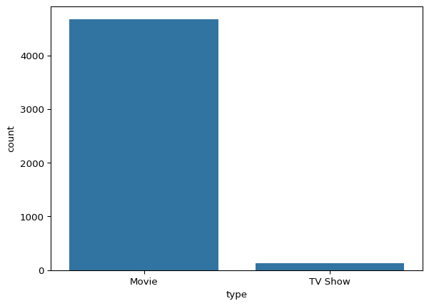
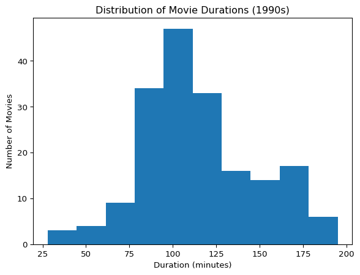

# import Python librairies
import pandas as pd
import matplotlib.pyplot as plt
import seaborn as snsProject 1: Netflix Movie Trends in the 1990s
Objective
Analyze Netflix movie data to uncover patterns in movie durations and genre trends during the 1990s.
Tools Used
- Python Libraries: pandas, matplotlib
- Techniques: Data filtering, type conversion, value counts, histogram visualization
Key Questions
- What was the most common movie duration in the 1990s?
- How many short action movies (< 90 minutes) were released in that decade?
Summary of Findings
- The most frequent duration was 94 minutes, showing a standard movie length for the 1990s.
- Only 7 short action movies were released in that time period, indicating a preference for longer runtimes in that genre.
# load the netflix data set as pandas data frame
Netflix = pd.read_csv("netflix_data.csv")1.0 Data Preview and Inspection
# to see first 5 columns of data frame
Netflix.head()| show_id | type | title | director | cast | country | date_added | release_year | duration | description | genre | |
|---|---|---|---|---|---|---|---|---|---|---|---|
| 0 | s2 | Movie | 7:19 | Jorge Michel Grau | Demián Bichir, Héctor Bonilla, Oscar Serrano, ... | Mexico | December 23, 2016 | 2016 | 93 | After a devastating earthquake hits Mexico Cit... | Dramas |
| 1 | s3 | Movie | 23:59 | Gilbert Chan | Tedd Chan, Stella Chung, Henley Hii, Lawrence ... | Singapore | December 20, 2018 | 2011 | 78 | When an army recruit is found dead, his fellow... | Horror Movies |
| 2 | s4 | Movie | 9 | Shane Acker | Elijah Wood, John C. Reilly, Jennifer Connelly... | United States | November 16, 2017 | 2009 | 80 | In a postapocalyptic world, rag-doll robots hi... | Action |
| 3 | s5 | Movie | 21 | Robert Luketic | Jim Sturgess, Kevin Spacey, Kate Bosworth, Aar... | United States | January 1, 2020 | 2008 | 123 | A brilliant group of students become card-coun... | Dramas |
| 4 | s6 | TV Show | 46 | Serdar Akar | Erdal Beşikçioğlu, Yasemin Allen, Melis Birkan... | Turkey | July 1, 2017 | 2016 | 1 | A genetics professor experiments with a treatm... | International TV |
# to see last 5 columns of data frame
Netflix.tail()| show_id | type | title | director | cast | country | date_added | release_year | duration | description | genre | |
|---|---|---|---|---|---|---|---|---|---|---|---|
| 4807 | s7779 | Movie | Zombieland | Ruben Fleischer | Jesse Eisenberg, Woody Harrelson, Emma Stone, ... | United States | November 1, 2019 | 2009 | 88 | Looking to survive in a world taken over by zo... | Comedies |
| 4808 | s7781 | Movie | Zoo | Shlok Sharma | Shashank Arora, Shweta Tripathi, Rahul Kumar, ... | India | July 1, 2018 | 2018 | 94 | A drug dealer starts having doubts about his t... | Dramas |
| 4809 | s7782 | Movie | Zoom | Peter Hewitt | Tim Allen, Courteney Cox, Chevy Chase, Kate Ma... | United States | January 11, 2020 | 2006 | 88 | Dragged from civilian life, a former superhero... | Children |
| 4810 | s7783 | Movie | Zozo | Josef Fares | Imad Creidi, Antoinette Turk, Elias Gergi, Car... | Sweden | October 19, 2020 | 2005 | 99 | When Lebanon's Civil War deprives Zozo of his ... | Dramas |
| 4811 | s7784 | Movie | Zubaan | Mozez Singh | Vicky Kaushal, Sarah-Jane Dias, Raaghav Chanan... | India | March 2, 2019 | 2015 | 111 | A scrappy but poor boy worms his way into a ty... | Dramas |
# To see column: missing values in each column, column data type, and memory usage.
Netflix.info()<class 'pandas.core.frame.DataFrame'>
RangeIndex: 4812 entries, 0 to 4811
Data columns (total 11 columns):
# Column Non-Null Count Dtype
--- ------ -------------- -----
0 show_id 4812 non-null object
1 type 4812 non-null object
2 title 4812 non-null object
3 director 4812 non-null object
4 cast 4812 non-null object
5 country 4812 non-null object
6 date_added 4812 non-null object
7 release_year 4812 non-null int64
8 duration 4812 non-null int64
9 description 4812 non-null object
10 genre 4812 non-null object
dtypes: int64(2), object(9)
memory usage: 413.7+ KB# Generate summary statistics for all numeric columns in the Netflix DataFrame
Netflix.describe()| release_year | duration | |
|---|---|---|
| count | 4812.000000 | 4812.000000 |
| mean | 2012.711554 | 99.566708 |
| std | 9.517978 | 30.889305 |
| min | 1942.000000 | 1.000000 |
| 25% | 2011.000000 | 88.000000 |
| 50% | 2016.000000 | 99.000000 |
| 75% | 2018.000000 | 116.000000 |
| max | 2021.000000 | 253.000000 |
# calculated the percentage of missing values per column
missing_pct = (Netflix.isnull().sum() / len(Netflix)) * 100# Display the percentage of missing values count for each column: filter only columns with missing values, but since the result is an empty Series
missing_pct = missing_pct[missing_pct > 0].sort_values(ascending=False).round(2)
print(missing_pct)Series([], dtype: float64)Data types and conversion
# Display the data type of each column in the Netflix DataFrame
Netflix.dtypesshow_id object
type object
title object
director object
cast object
country object
date_added object
release_year int64
duration int64
description object
genre object
dtype: objectConvert data_added to date variable
# Convert the "date_added" column to datetime format; invalid entries are set to NaT (Not a Time)
Netflix["date_added"] = pd.to_datetime(Netflix["date_added"], errors="coerce")Categorical EDA
# Return a pandas series: Count the frequency of each unique category in the "type" column.
Netflix["type"].value_counts()type
Movie 4677
TV Show 135
Name: count, dtype: int64sns.countplot(data= Netflix, x="type")
plt.show()
# Return a pandas series: Count the proportion of each unique category in the "type" column.
Netflix["type"].value_counts(normalize=True)type
Movie 0.971945
TV Show 0.028055
Name: proportion, dtype: float64Netflix["country"].value_counts()country
United States 1886
India 864
United Kingdom 311
Canada 155
France 133
...
Guatemala 1
Jamaica 1
Paraguay 1
Somalia 1
Croatia 1
Name: count, Length: 72, dtype: int64Netflix["country"].value_counts(normalize=True)country
United States 0.391937
India 0.179551
United Kingdom 0.064630
Canada 0.032211
France 0.027639
...
Guatemala 0.000208
Jamaica 0.000208
Paraguay 0.000208
Somalia 0.000208
Croatia 0.000208
Name: proportion, Length: 72, dtype: float64print(Netflix["country"].nunique())72Netflix["genre"].value_counts()genre
Dramas 1343
Comedies 1029
Action 696
Children 421
Documentaries 352
Stand-Up 283
Horror Movies 239
International Movies 100
Classic Movies 69
Thrillers 49
International TV 39
Crime TV 30
Uncategorized 25
British TV 20
Independent Movies 20
Anime Features 18
Music 14
Cult Movies 11
Sci-Fi 11
Kids 10
Anime Series 9
Docuseries 7
TV Shows 4
Romantic Movies 3
TV Comedies 3
TV Action 2
Romantic TV 1
TV Horror 1
Classic 1
Reality TV 1
LGBTQ Movies 1
Name: count, dtype: int64Netflix["genre"].value_counts(normalize=True)genre
Dramas 0.279094
Comedies 0.213840
Action 0.144638
Children 0.087490
Documentaries 0.073150
Stand-Up 0.058811
Horror Movies 0.049667
International Movies 0.020781
Classic Movies 0.014339
Thrillers 0.010183
International TV 0.008105
Crime TV 0.006234
Uncategorized 0.005195
British TV 0.004156
Independent Movies 0.004156
Anime Features 0.003741
Music 0.002909
Cult Movies 0.002286
Sci-Fi 0.002286
Kids 0.002078
Anime Series 0.001870
Docuseries 0.001455
TV Shows 0.000831
Romantic Movies 0.000623
TV Comedies 0.000623
TV Action 0.000416
Romantic TV 0.000208
TV Horror 0.000208
Classic 0.000208
Reality TV 0.000208
LGBTQ Movies 0.000208
Name: proportion, dtype: float64print(Netflix["genre"].nunique())31Filter Movies to the 1990s
# Filter Movies to the 1990s
movies_df = Netflix[Netflix["type"] == "Movie"].copy()# Filter movies released in the 1990s
movies_90s = movies_df[(movies_df["release_year"] >= 1990) & (movies_df["release_year"] < 2000)]# Visualize the distribution of movie durations
plt.hist(movies_90s["duration"])
plt.title("Distribution of Movie Durations (1990s)")
plt.xlabel("Duration (minutes)")
plt.ylabel("Number of Movies")
plt.show()
min_date = movies_90s["release_year"].min()
max_date = movies_90s["release_year"].max()
print(min_date)
print(max_date)1990
1999Answer Question 1: Most Frequent Movie Duration
# Find the most frequent duration
duration = movies_90s["duration"].mode()[0] # mode returns a Series, so take the first
print("Most frequent duration:", duration)Most frequent duration: 94Interpretation:
A duration of 94 minutes suggests that typical 1990s films leaned toward a standard feature-length format — long enough for storytelling but concise enough for wide audience appeal.
This insight aligns with industry patterns from that era, where movies often ranged between 90–120 minutes.
Answer Question 2: Count Short Action Movies < 90 min
# Filter Action movies from the 1990s
short_action = movies_90s[(movies_90s["genre"] == "Action") & (movies_90s["duration"] < 90)]
# Count how many Action movies had a duration under 90 minutes
short_action_count = (short_action["duration"] < 90).sum()
#short_movie_count = short_action.shape[0]
print("Short Action Movies:", short_action_count)Short Action Movies: 7Interpretation:
Action movies during the 1990s were generally longer than 90 minutes, likely due to their complex plots, action sequences, and production style.
The relatively small number (7 out of all action movies) implies that short-form action content was rare, possibly limited to niche markets or lower-budget productions.
Insights
- A majority of 1990s Netflix movies are around 94 minutes, suggesting a consistent production format.
- Action movies during the same decade were rarely shorter than 90 minutes, hinting at genre-driven runtime requirements.
Next Steps
- Extend the analysis to other genres or time periods (2000s, 2010s)
- Add more complex filters (e.g., by country or rating)
- Consider clustering movies by duration + genre + country for pattern discovery (Project 2)
Portfolio Use
This project demonstrates ability to: - Clean and preprocess a real-world dataset - Apply basic statistics and visualization - Answer business-relevant questions using data